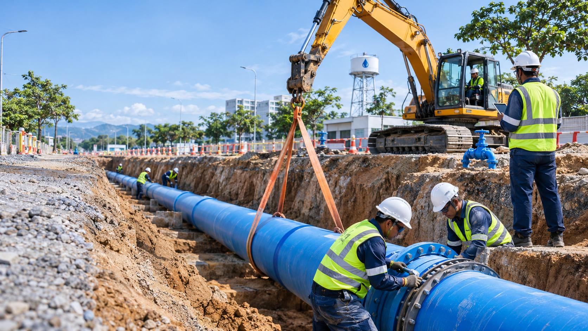
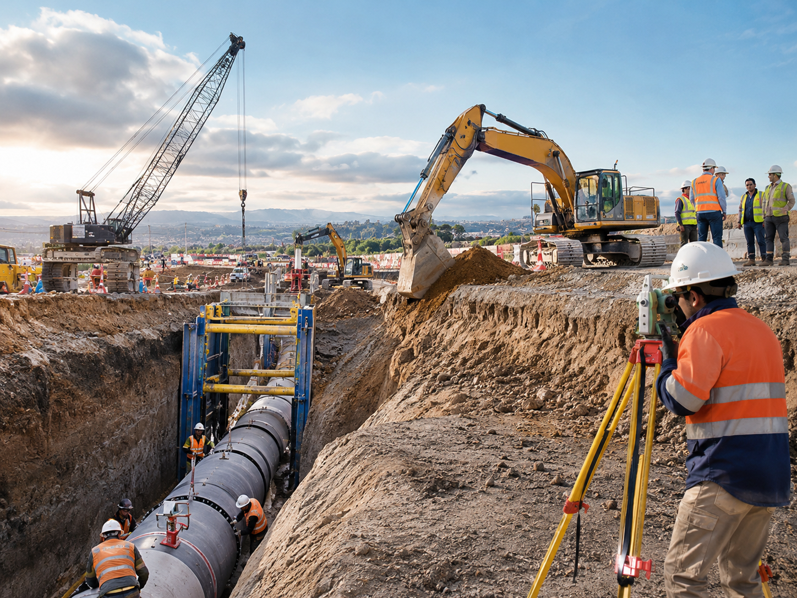
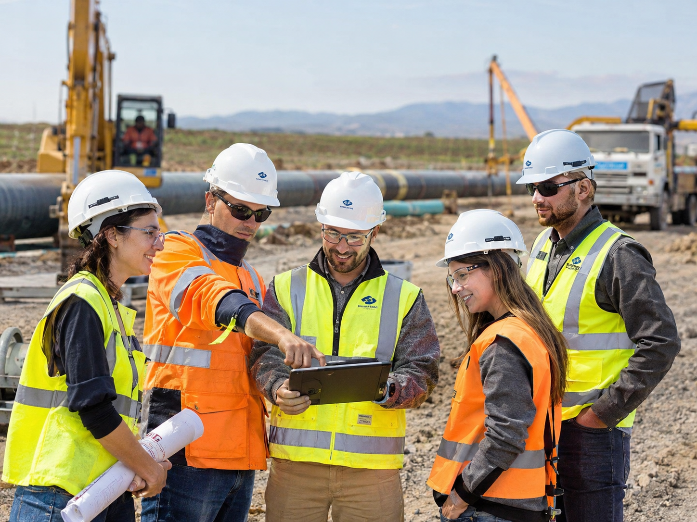
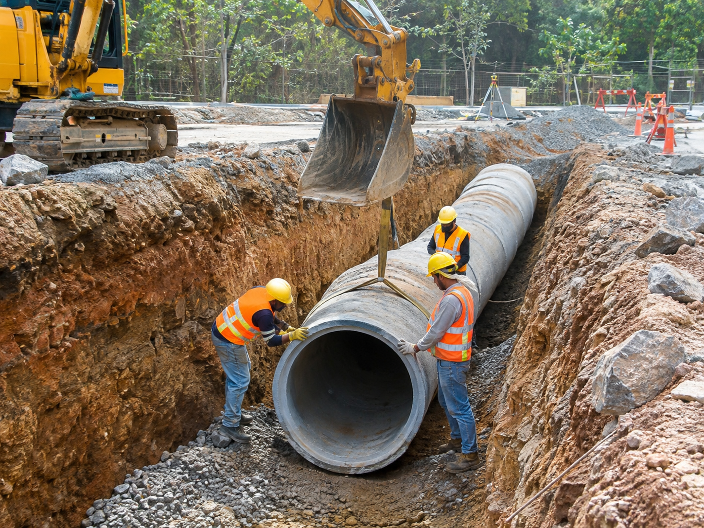
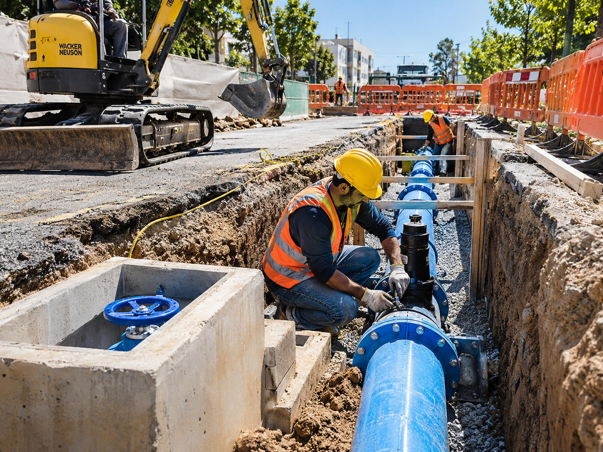

Redes de agua potable
Tendido de cañerías, válvulas, empalmes, cámaras y pruebas hidráulicas para nuevas urbanizaciones y ampliaciones.

Desarrollamos infraestructura confiable para urbanizaciones, parques industriales, municipios y contratistas, combinando capacidad operativa, ejecución segura y enfoque técnico.
Este demo representa a una empresa orientada a obras civiles de infraestructura sanitaria e hidráulica. El objetivo del sitio es transmitir seriedad, experiencia de campo y una imagen profesional apta para licitaciones, clientes privados y organismos públicos.
El contenido puede adaptarse con el nombre real de la empresa, logo, cartera de obras, certificaciones, equipamiento disponible y referencias técnicas.
Relevamiento, cómputo, secuencia de obra y coordinación de recursos.
Excavación, tendido de cañerías, cámaras, válvulas y conexiones.
Supervisión técnica, ensayos, seguridad y seguimiento de plazos.

Estos bloques son editables y pueden ampliarse según las prestaciones reales de la empresa.

Tendido de cañerías, válvulas, empalmes, cámaras y pruebas hidráulicas para nuevas urbanizaciones y ampliaciones.

Construcción de redes de desagüe, colectores, cámaras de inspección y sistemas de conducción sanitaria.

Movimiento de suelo, zanjeo, compactación, reposición, conexiones y montaje de accesorios de gran diámetro.
En la versión final, aquí conviene mostrar obras reales con ubicación, comitente, alcance y año de ejecución.
Reemplazo de cañería principal, excavación asistida, coordinación urbana y montaje de gran diámetro.
Extensión de red con cámaras y válvulas de sectorización.
Instalación de conductos y cámaras de inspección.
Analizamos documentación, terreno, interferencias y necesidades de ejecución.
Definimos alcance, recursos, cronograma y metodología constructiva.
Implementamos la obra con seguimiento técnico, seguridad y coordinación operativa.
Realizamos verificaciones finales, documentación y cierre ordenado del proyecto.
Podemos reemplazar el nombre provisorio, cargar obras reales, datos de contacto, ubicación, logo, colores corporativos y dejarlo listo para publicar.
Esta sección está preparada para reemplazarse por los datos reales de la empresa.